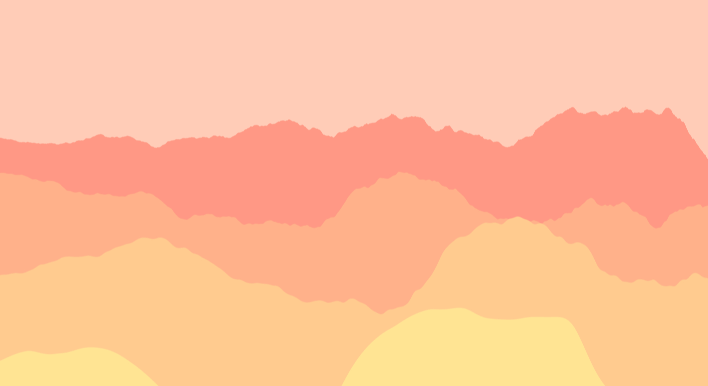

Hop Mountains
April 2017
What do I think? When I arrive in a region, I reduce and abstract some elements of the landscape. Inspired by impression made at the convergence of mountains and sky, my paintings are multitude of colors, lines and forms to convey nature’s essence. Capturing the qualities of light, I depict a world of sensual changing colors.